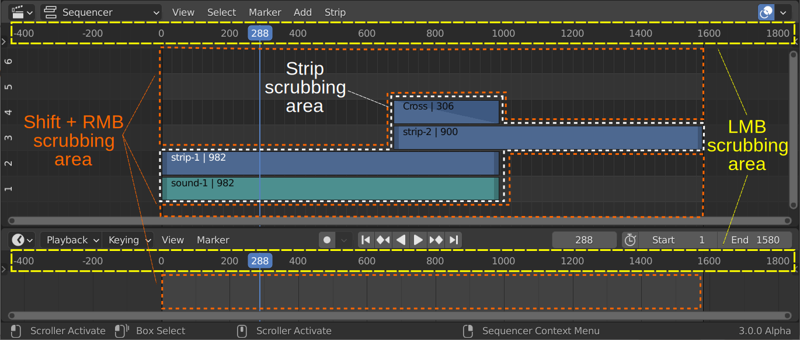
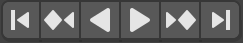

1.1.2.3. ナビゲーション¶
タイムライン内を閲覧するには、Playheadを移動して、選択したフレームをプレビュー ウィンドウに表示します。Playheadは青い縦線で、上部にプレビューされたフレーム番号が表示されます。
図1: Playheadの詳細¶
図1 では、Playheadはフレーム 3 と 4 の間に配置されており、上部の小さな青い四角形でフレーム4 がPreviewウィンドウにあることを示しています。したがって、Playheadは常にプレビューされるフレームの先頭に配置されます。
警告
「現在のフレーム」という用語に関しては、混乱を招く可能性があります。 [Strip プロパティ] > [Time] パネルによると、現在のフレームはフレーム 3 ですが、PlayheadとPreviewウィンドウにはフレーム 4 が表示されます。これは、[Time] パネルの [Current Frame] フィールドが相対的な尺度であるためです。これは、Playheadの位置です。アクティブストリップの視覚的な開始点 (≠ Start フィールド) を基準にします。
図1: Playheadはフレーム4 にあり、ストリップはフレーム 1 から始まります。そして、[Current Frame] = 3 です。 ストリップの開始フレームを表示するには、Playheadを3フレーム分動かす必要があります。
ストリップがフレーム 0 から開始していれば、[Current Frame] は 4 であるはずです。
ストリップがフレーム 5 から開始していれば、Playheadはフレーム8にあり、[Current Frame] は 3 であるはずです。
1.1.2.3.1. ジャンピング¶
- 特定のフレームへのジャンプ
Playheadは、タイムライン上部のスクラブ領域で LMB を押すかドラッグすることで、新しい位置に設定または移動できます。スクラブ領域はフレーム番号またはタイムコードが記載されている領域です。
この操作は、Sequencerのスクラブ領域で Shift RMB を押すかドラッグすることによっても実行できます。Sequencerのスクラブ領域は、既存のストリップ バーを含む領域全体です。スクラブ領域については、図2 を参照してください。
タイムライン エディタの [Current Frame] フィールドにフレーム番号を入力することで、Playheadを特定のフレームに設定できます。通常は右下にあります。
- フレームごとに移動する
カーソルキーの Left や Right を押すと、Playheadを 1 フレームずつ移動できます。
Alt を押しながら MMB を回転させると、Playhead がフレームごとに移動します。
- 境界にジャンプする
Shift-Left または Shift-Right を押すと、プロジェクトのフレーム開始位置またはフレーム終了位置にジャンプできます。 これらの2つのフィールドは、[Properties Editor] > [Dimensions] パネル 1 または Timeline Editor (右下) で設定します。
Timeline Editorの Transport コントロールにある[Jump to Endpoint]ボタン をクリックしても、同じことができます。
PgUp または PgDn を押すと、Playhead が次または前のストリップ(すべてのチャンネルにわたる)の先頭に移動します 。 タイムラインのスクラブ領域でを LMB 使用してドラッグを開始した後、Ctrl を押し続けることによっても同じことができます。
Alt PgUp または Alt PgDn を押すと、Playheadが次または前のストリップ（すべてのチャンネルにわたる）の中央に移動します。
1.1.2.3.2. スクラブ¶
スクラブは、正確なタイミングをあまり気にせずに、Preview ウィンドウでプロジェクトをすばやく確認するために使用されます。これは、1 秒以内に数十のフレームを飛び回ったりプレビューしたりするため、非常にプロセッサを集中的に使用するジョブになる可能性があります。そのため、多少の遅れや途切れが発生する可能性があります。proxies の使用(最終的には非常に低い解像度になります) がここに示されています。
スクラブは、タイムラインの上部にあるスクラブ領域 (図 2、黄色のテキストと矢印を参照) で LMB を使用してドラッグするか、Sequencerのスクラブ領域 (図 2、オレンジ色のテキストを参照) で Shift RMB をドラッグして実行します。
図2: スクラブ領域¶
図2 からわかるように、上部のSequencer または下部のTimeline Editorから、両方のタイムラインを使用できます。下部のタイムラインをスクラブすると、上部のPlayheadも移動します。両方のタイムラインを同期 (同じフレーム範囲、同じPlayhead位置)させる場合、 両方 のタイムラインの [View]メニューで[
Sync Visible Range]でオプションを設定する必要があることに注意してください。Sequencerのストリップ上で Shift-RMB を直接ドラッグすると、ストリップ ソロ が表示され、エフェクトや他のストリップは一時的に無視され、このストリップの出力のみが表示されます (図2 の白いテキストと矢印で示されています)。 たとえば、2つのカラー ストリップが重なっている場合、通常はPreviewウィンドウで最上位のチャンネルのストリップが表示されます。下のカラーストリップを Shift-RMB で ドラッグすると、このカラーストリップのみがPreviewウィンドウに表示されます。これはサウンドでも機能します。サウンドストリップでは音声のみが生成されます。
通常、ストリップ ハンドルをドラッグするとストリップが縮小または拡張されますが、Previewは変更されません (Playheadのフレームを表示し続けます)。Previewウィンドウの[View]メニュー > [Preview during Transform]オプション を設定すると、ハンドルをドラッグ時にハンドル位置のフレームも表示されます。
1.1.2.3.3. 再生¶
Transportコントロールは、Video Editor workspace の最下部にあります。これらはTimeline Editorの一部です。これらは Sequencer と統合することもできます。参照 Video Editing Workspace
図5: Transportコントロール¶
これらのコントロールはおそらく一目瞭然です。再生/逆再生ボタンを押すと、Playheadから順方向または逆方向で動画の再生が開始されます。順方向に再生するためのショートカットキーは Spacebar キーです。Shift - Ctrl - Spacebar は逆再生のショートカットです。
注釈
Blender を初めてインストールするときは、Spacebar の機能など、いくつかの基本的な選択肢を入力する必要があります (以前のバージョンでは、ヘルプ機能が割り当てられていました)。これは、[User Preferences] > [Keymap] > [Spacebar Action] で確認またはリセットできます。 2
ムービーの再生中、再生ボタンは一時停止ボタンに置き換えられます。Spacebar を押すと、再生と一時停止が切り替わります。
[Jump to Keyframe] ボタンは、タイムラインにキーフレームがある場合にのみ機能します。
課題
キーフレームに関するセクションへのリンクを挿入
[Jump to Endpoint] ボタンを使用すると、Playheadがフレーム範囲の最初または最後のフレームに移動します (参照 see Project settings)。ショートカットキーは Shift Leftarrow または Shift Rightarrow です。
1.1.2.3.4. Playback設定¶
{kind=link}
Previewウィンドウの左上隅に、再生中の進行中のフレームレート (例: 23 fps) が表示されます。赤い数字は、実行中のフレームレートがプロジェクトで設定されたフレームレートよりも遅いことを示します。
高負荷時などの再生の動作設定は、Timelineウィンドウの左側にある[Playback]メニューで設定できます。
- Sync
Play Every Frame: 再生が遅い場合でもすべてのフレームを再生します。フレームレートが希望の fps を下回る可能性があります。
Frame Dropping: 再生がシーンのフレームレートより遅くなった場合、フレームをドロップします。高負荷時では、これは動画のコマ落ちとして非常に目立ちます。
Sync to Audio (default): 再生がシーンのフレームレートより遅くなった場合、フレームをドロップします。
- Audio
Scrubbing: オーディオ ストリップを使用してタイムラインをスクラブするのは、煩わしい場合があります。スクラブの速度が速いため、音が歪みます。このオプションを使用すると、スクラブ中にオーディオのオンとオフを切り替えることができます。
Mute: このオプションを使用すると、すべてのサウンド ストリップのサウンドをミュートできます。
- Playback
Limit to Frame Range: マウスを使用して再生範囲外のフレームを選択することを許可しません。
Follow Current Frame: 再生中に、Playheadがタイムライン上を移動します。図2 では、フレーム範囲 (例: 1 ～ 1580) がTimelineウィンドウ内に完全に収まっています。ただし、ほとんどの場合、そうではありません。しかし、フレーム範囲がTimelineウィンドウよりも大きい場合はどうなるでしょうか? PlayheadがTimelineウィンドウの境界に達するとどうなりますか? [Follow Current Frame] が無効になっている場合、Playheadは画面からはみ出します。有効にすると、Timelineウィンドウがパンされ、同じ幅の次のフレーム範囲が表示されます。
- Play In
再生ボタンを押すと、Previewウィンドウでムービーが再生されます。すべてのオプションが無効になっている場合、Previewウィンドウは更新されません。したがって、動画をプレビューするには、少なくとも Animation Editors (Timeline、Dope Sheet、Graph Editor、Video Sequencerを更新) または Video Sequencer のチェックボックスを有効にする必要があります。
1.1.2.4. マーカーの使用¶
タイムラインが長い場合は、マーカーを挿入すると便利な場合があります。 マーカーは、特定のフレームに意味のある名前を付けるために使用されます。これらはシーケンサーのタイムラインの下部に小さな白い三角形として表示されます。 図2 では、2番目のマーカー(Appearance dog) が選択されています。 白塗りの三角形、わずかに浮き上がったテキストと、白い点線の垂直線によって確認できます。 他のマーカーは選択されていません (灰色の輪郭と黒い点線のみ)。最初のマーカー (F_01) は、メニューの [Marker]メニュー > [Add Marker] (M) の実行結果です。このマーカーはPlayheadの位置に追加され、標準名は F_XXX です。XXX はフレーム番号です。テキストはわずかにわずかに浮き上がっており、Playheadがマーカーの位置にあることを示しています。より意味のある名前をつけるには、名前を変更する必要があります。 ([Marker] > [Rename Marker] か ショートカットキー F2 か マーカーを LMB-DoubleClick 3)
Figure 2: Markers in the Sequencer timeline¶
詳細については、Animation & Rigging > Markers を参照してください。 Video Sequencerの最も重要なコマンドを要約すると、次のようになります。
タイムライン内のマーカーの表示は、[View]メニュー > [Show Markers] でオンとオフを切り替えることができます。
マーカーの追加: フレームを選択して M を押します。動画を見ながら、再生中にマーカーを追加することもできます。Playheadが目的のフレームにあるときに M 押すだけです。マーカーには F_514 (フレーム514のマーカーの場合) のような名前が付きます。
マーカーの選択: マーカーの三角形を LMM-Click して選択。すべてのマーカーを選択するには、マーカーのタイムライン上で A を押します。複数のマーカーを選択するには、LMB を押して、複数のマーカーをドラッグして選択します。
マーカー名の変更：マーカーを選択して F2 を押します。(LMB-DoubleClick でも同様)
マーカーの移動: マーカーを選択して G を押します。カーソルを動かし、マーカーを移動して LMB-Click で確定、 RMB-Click でキャンセルします。
マーカーの削除: マーカーを選択して X を押します。.
脚注